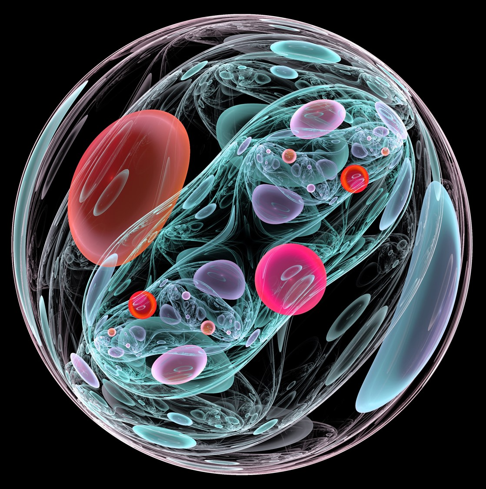

Our Research
Stem cells are defined by their ability to self-renew and give rise to progeny cells. They are present during embryonic development, when the body grows and ages, and when disease develops. How these cells are derived, maintained and differentiated continue to fascinate many. Understanding how stem cells regulate cell plasticity and self renewal have broad implications from understanding organ formation and repair to cancer development. At the same time, stem cell base therapeutics that could be the solution to many debilitating diseases. Through the derivation, culture and manipulation of tissue stem cells, our lab strives to unravel these fundamental knowledge, which will be essential for us to master the art of cell fate control in a dish.
Key research topics in the laboratory
1. Genetic and chemical control of stem cell fate
Transcription factors (TF) and signaling processes work intricately to maintain the stem cell state. This is well-demonstrated by the Nobel-winning induced pluripotent stem cell (iPSC) technology where combinations of TF could reprogram somatic cells to one of the most primitive embryonic cell state. The process also requires the provision of essential signaling niche environment that sustain the cell states. Through the manipulation of TF combinations and signaling modulators including small molecules / growth factors /cytokines, we can now potentially create any cell types synthetically in a dish. Employing similar strategies, our lab aims to manipulate cell fate in a dish to create functional organ cell types and synthetic cell types with novel applications.
2. TISSUE STEM CELLS FOR THERAPEUTIC DISCOVERY
To isolate and propagate cell types of interest from the human body has been a continuous challenge for scientists, in the attempt to create best-in-class human in vitro models. The ability to derive patient-specific primary cells that could be continuously propagated will be ground breaking for various fields of research including regenerative medicine as well as precision therapy. Our lab is interested in establishing primary human stem cell cultures from healthy and disease tissues. We have created a novel strategy to derive stem cell culture from the liver of healthy individuals and patients suffering from various liver diseases. These cell resources provide a novel avenue for creating patient-specific Organoids for disease modelling as well as a potential renewable cell source for regenerative therapy.